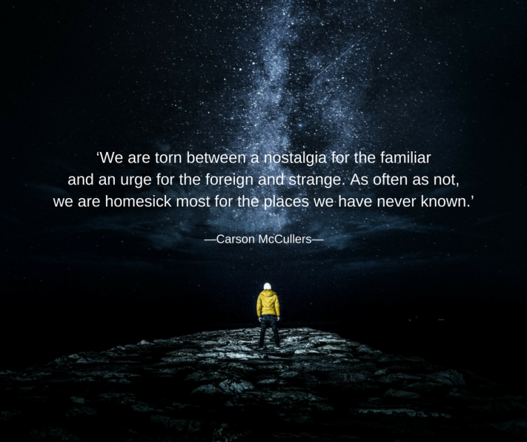

A longing for a past culture.
"Coping with media change is the modus operandi in societies shaped by an ongoing media saturation of everyday lifeworlds. However, demands to participate in media change are sometimes perceived as challenging. In this regard, media nostalgia, understood as the longing for past media culture and technology, is introduced as a resource to cope with media change."
Professor Menke (2017)
With technology growing and expanding at incredible rates in the last 30 years, the 'coping generation' would affect people who grew up in the 80s or earlier. This could explain why elements from the '80s have shown up in a lot of modern pop culture and media.
In the 1970s a man of the name Fred Davis studied the current wave of nostalgia happening during that time
"in modern history the common man had his fundamental, taken for-granted convictions about man, woman, habits, manners, laws, society and God . . . so challenged, disrupted and shaken"
Fred Davis (1977)
In other words, whether it's from too much of a technological tear or cultural tear, a nostalgia wave follows with the wave proportional to the size of the tear in the two societies. 
We can continue to expect nostalgic-driven content in our media and products. Nostalgia is and will continue be a substantial theme in modern media, mainly because of its proven ability to illicit an emotional, somewhat subliminal, response from consumers, drawing them in and leveraging sales opportunities to its maximum potential.